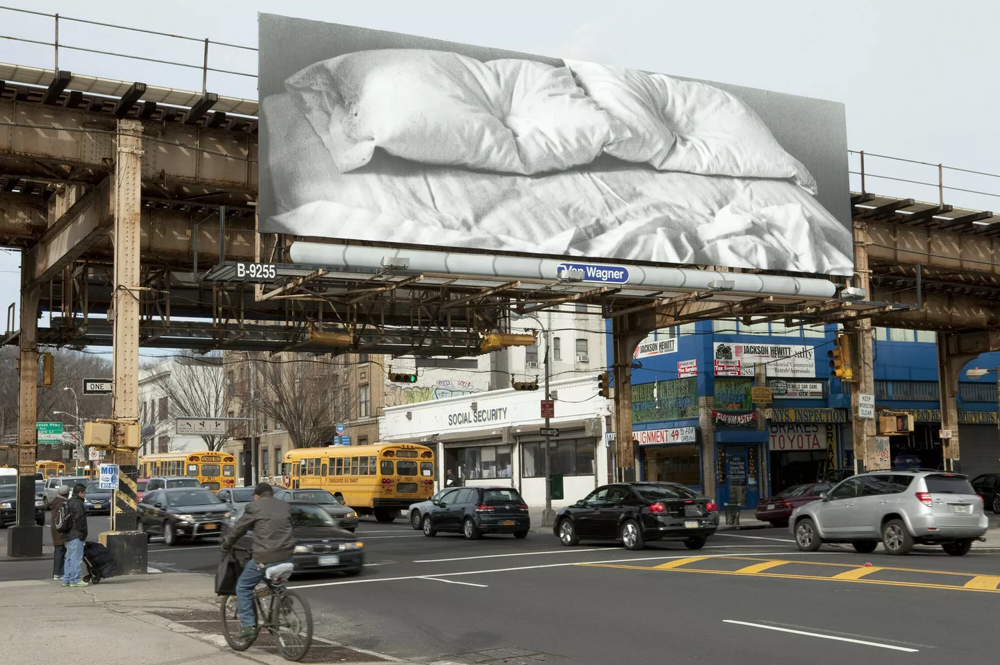
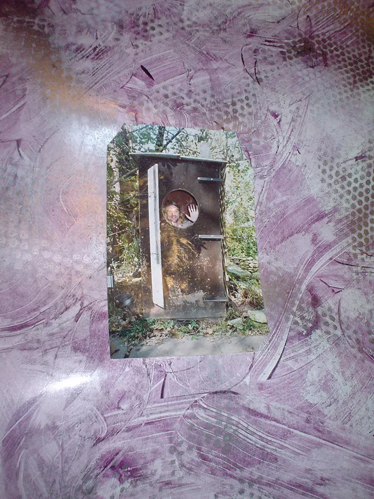

Trauma in the Frame if long title if long title if long title

Felix Gonzalez-Torres "Untitled", 1991 Billboard Dimensions vary with installation Installed at Pennsylvania Avenue near Fulton Street, Brooklyn. One of six outdoor billboard locations throughout the New York City area, with 1 indoor location, as part of the exhibition Print/Out. The Museum of Modern Art (MoMA), New York, NY. 19 Feb. – 14 May 2012. Cur. Christopher Cherix. Catalogue. [With outdoor billboards on display 20 Feb. – 18 Mar. 2012.] Photographer: David Allison © Estate Felix Gonzalez-Torres Courtesy Felix Gonzalez-Torres Foundation
Luca Guadagnino's recently released film Queer is a study of longing and alienation, steeped in trauma. Based on William S. Burroughs' once forgotten autobiographical novella of the same name, the film follows William Lee, an American expat living in 1950s Mexico City who becomes infatuated with a younger man named Allison.
The film is saturated with a sense of displacement — both physical and emotional. Lee exists on the margins of every space he inhabits, watching others from a careful distance, always slightly out of frame. Guadagnino renders this interiority visually, using long takes and sparse dialogue to communicate what cannot be said.
What interests me most is how the film handles the representation of trauma not as event, but as atmosphere. There is no single catastrophic moment — instead, trauma accumulates in glances, in silences, in the texture of light on skin. It is cinema that understands grief as something lived in rather than recovered from.
This is where Gonzalez-Torres becomes relevant. His billboard works — images of unmade beds, empty landscapes, birds in flight — operate similarly. They refuse the spectacle of suffering in favour of its quiet aftermath. The bed has been slept in, and now it is empty. Someone was here, and now they are not.

Your caption here
The photo was taken in Kansas in the United States, on Burroughs' property. Burroughs is best known for his postmodern writings, such as the novel Queer and his shotgun art. [6] Burroughs shot spray paint cans taped to a canvas with a shotgun to create abstract paintings. The photo is dated six months prior to Cobain's suicide.
Both artists understand that trauma's most honest representation is negative space — the shape of what is missing, not the thing itself.